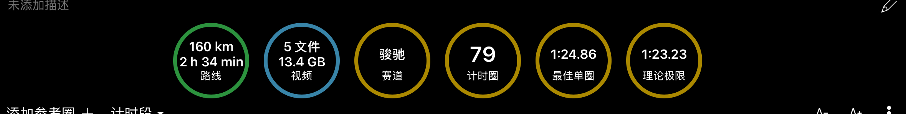

赛车记2
没有想到会去跑第三站，结合这一站的log日志与视频，做一个总结吧！ 
同样先说结果：本次再次刷新单圈最佳：1:24:86，理论最佳单圈：1:23:23，两回合正赛均以亚军带回
官方练习和排位赛，没有太多可说，在上一次的经验和基础上，正常发挥，均拿下第一，最好成绩分别是：1:25:44和1:25:99，稍微领先第二第三，心想着第二天正赛，正常发挥，拿下冠军应该没问题，但没想到正赛出乎意料的精彩！
正赛第一回合：
- 第一圈：89号车，杆位发车，起步就被两车超过，心想，昨天这两名香港选手，隐藏实力也太深了吧，排位放水那么多，正赛这么猛，没时间多想，S弯过后，T6+T7左回头弯，过掉一位，来到第二；
- 来到第二圈，同样是S弯过后，利用S弯出弯速度优势，T6+T7左回头弯走内线，出弯过后并排，T9+T10右转上坡弯占据内线优势，干净的完成超越，来到第一；
- 之后第三、四、五圈均在第一的位置领跑，此时希望比赛赶紧结束，完全没想到正赛会是这样的节奏，但越是这样想，越容易出问题，这几圈看后视镜后车丝毫没有被拉开，虽然没有被超越，但出现了好几次明显失误，正如《头文字D》中所说，前车往往会有更大的心里压力，总觉得甩不掉后车，其实第5圈跑得还不错，已经拉开了一定的安全距离；
- 第六圈，在比赛经验不足和心里压力下，第T1弯出现失误，循迹刹车减速不够，推出了赛道，不仅损失了时间，回到赛道后，明显速度不够，S弯过后，被后车轻松超越；
- 第七圈，后追上来的55号出弯速度非常惊人，到了龙门架下，几乎与前两车并排，我继续走自己的赛车线，拉到外线，寻找一个更好的入弯角度，可以交叉线过掉前车，这招显然奏效，出弯时3台车并排，我凭借最好的入弯角度，有更高的出弯速度，从三车并排中杀出，重回第一，这应该是整场比赛最精彩的时刻；
- 最后一圈，和上一圈类似，三台车差距依然非常小，我出现少许失误，虽然忍在第一，但是出弯速度明显低很多，S弯过后，不可避免处于不利，在左回头弯被超越还发生了碰撞……;
第一回合赛后总结：
- 停车后，55号车头盔一摘，原来是上一站破纪录的某车队的车手，我说咋这么快；98号车的抢跑、碰撞不想过多赘述，只希望此比赛之后更加规范；
- 主要总结分析下自己的点：
- 起步，被第二位发车超越，我起步确实是不好，这已经是第三次起步被后车超越了，目前还没找到解决办法；
- 防守：领跑时没能全程处理好每个弯角，借机拉开差距，出现失误，给后车留下机会；如果说上一站是不会进攻，被前车影响了自己，那这一站就是不会防守，被后车影响了自己；总结就是，处于后车时，应走自己的赛车线，跑自己的节奏，逼近前车看准时机，果断超车，处于前车时，正常情况就走自己赛车线，减少失误，拉开差距，若没能拉开，就应该适当走防守线，而不是放任后车自由进攻；
- 对于赛道分析，上一站分析基本正确，本站超车基本都发生在S弯过后的T6+T7左回头弯，S弯过得好与坏，几乎决定了当圈名次是否会发生变化；
- 如何更快：起步，需要找到更快的起步方法，过好S弯，发挥自己的优势，大U弯，此处可以摸索轮胎极限，通常比别人快，以及最后的T14，看车外视频，可以吃得更多路肩；
- 斗志：第7圈T1，两车在两边，我毫不犹豫的选择从中间插入，利用出弯优势重回第一，真的令人热血沸腾；第一回合我共发生了7次位置变化，分别是：第一圈(1>3,3>2)，第二圈(2>1)，第6圈(1>2)，第7圈(2>1)，第8圈(1>2,2>3)，总的来说是一场非常非常精彩的比赛；